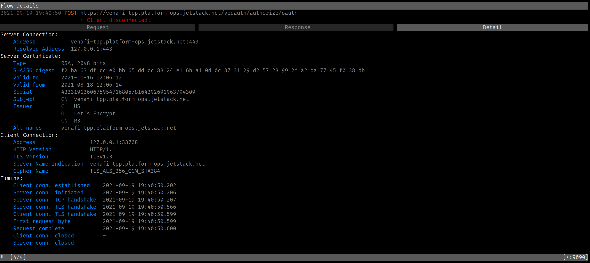
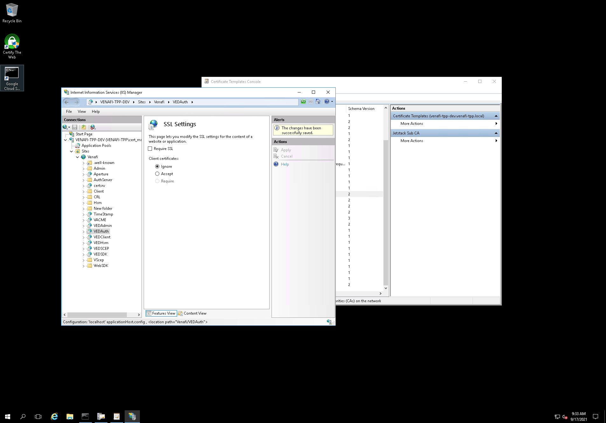

Wireshark Debug Mitmproxy
I frequently use mitmproxy to inspect what HTTP requests and responses look like under the hood. Inspecting HTTP flows comes in handy with tools that tend to hide the actual JSON error messages.
One tool I have been using a lot is vcert. vcert allows you to request X.509 certificates from Venafi Trust Protection Platform (TTP) as well as Venafi Cloud.
In the following example, I give an unknown client ID duh. vcert just tells me about the error in the initial HTTP header:
$ vcert getcred --username foo --password bar --client-id=duh --verbose
vCert: 2021/09/19 19:23:56 Getting credentials...
vCert: 2021/09/19 19:23:56 Got 400 Bad Request status for POST https://venafi-tpp.platform-ops.jetstack.net/vedauth/authorize/oauth
vCert: 2021/09/19 19:24:05 unexpected status code on TPP Authorize. Status: 400 Bad Request
I am sure that the HTTP API is returning more than just the HTTP header 400 Bad Request!
But when I try using mitmproxy, I get the following error:
$ HTTPS_PROXY=:9090 vcert getcred --username foo --password bar --client-id=duh --verbose
vCert: 2021/09/19 19:29:20 Getting credentials...
vCert: 2021/09/19 19:29:50 Post "https://venafi-tpp.platform-ops.jetstack.net/vedauth/authorize/oauth": context deadline exceeded (Client.Timeout exceeded while awaiting headers)
Looking at the “Detail” tab for the HTTP call recorded in mitmproxy, I can see that the HTTP request was acknowledged by the TPP server (see the “Request complete” time):

For some reason, the response never arrives. At this point, I had the following hypothesis:
When using mitmproxy, I hit an issue with vcert: the vcert HTTP requests would not be responded to with mitmproxy in-between.
- 10.132.0.13 = the TPP instance IP,
- 35.235.243.226 = the iap proxy IP.
Using a direct connection (vcert -> iap proxy -> tpp instance), the HTTP request succeeds:
35.235.243.226 -> 10.132.0.13 TCP 74 46011 → 443 [SYN]
10.132.0.13 -> 35.235.243.226 TCP 74 443 → 46011 [SYN, ACK]
35.235.243.226 -> 10.132.0.13 TCP 66 46011 → 443 [ACK]
35.235.243.226 -> 10.132.0.13 TLSv1.2 354 Client Hello
10.132.0.13 -> 35.235.243.226 TLSv1.2 3474 Server Hello, Certificate, Certificate Status, Server Key Exchange, Server Hello Done
35.235.243.226 -> 10.132.0.13 TCP 66 46011 → 443 [ACK]
35.235.243.226 -> 10.132.0.13 TLSv1.2 159 Client Key Exchange, Change Cipher Spec, Encrypted Handshake Message
10.132.0.13 -> 35.235.243.226 TLSv1.2 117 Change Cipher Spec, Encrypted Handshake Message
35.235.243.226 -> 10.132.0.13 TCP 66 46011 → 443 [ACK]
request 35.235.243.226 -> 10.132.0.13 TLSv1.2 470 Application Data
10.132.0.13 -> 35.235.243.226 TLSv1.2 99 Encrypted Handshake Message
35.235.243.226 -> 10.132.0.13 TCP 66 46011 → 443 [ACK]
1st diff 35.235.243.226 -> 10.132.0.13 TLSv1.2 390 Encrypted Handshake Message
10.132.0.13 -> 35.235.243.226 TLSv1.2 3552 Encrypted Handshake Message
35.235.243.226 -> 10.132.0.13 TCP 66 46011 → 443 [ACK]
tls renego? 35.235.243.226 -> 10.132.0.13 TLSv1.2 243 Encrypted Handshake Message, Encrypted Handshake Message, Change Cipher Spec, Encrypted Handshake Message
10.132.0.13 -> 35.235.243.226 TLSv1.2 141 Change Cipher Spec, Encrypted Handshake Message
35.235.243.226 -> 10.132.0.13 TCP 66 46011 → 443 [ACK]
response 10.132.0.13 -> 35.235.243.226 TLSv1.2 704 Application Data
35.235.243.226 -> 10.132.0.13 TCP 66 46011 → 443 [FIN, ACK]
10.132.0.13 -> 35.235.243.226 TCP 66 443 → 46011 [ACK]
Using mitmproxy in between (vcert -> mitmproxy -> iap proxy -> tpp instance), the HTTP request is correctly sent and aknowledged, but hangs after that:
35.235.243.226 -> 10.132.0.13 TCP 74 37677 → 443 [SYN] Seq=0 Win=65535 Len=0 MSS=1420 SACK_PERM=1 TSval=2496784362 TSecr=0 WS=256
10.132.0.13 -> 35.235.243.226 TCP 74 443 → 37677 [SYN, ACK] Seq=0 Ack=1 Win=8192 Len=0 MSS=1420 WS=256 SACK_PERM=1 TSval=3076275429 TSecr=2496784362
35.235.243.226 -> 10.132.0.13 TCP 66 37677 → 443 [ACK] Seq=1 Ack=1 Win=65536 Len=0 TSval=2496784362 TSecr=3076275429
35.235.243.226 -> 10.132.0.13 TLSv1.2 396 Client Hello
10.132.0.13 -> 35.235.243.226 TLSv1.2 2963 Server Hello, Certificate, Server Key Exchange, Server Hello Done
35.235.243.226 -> 10.132.0.13 TCP 66 37677 → 443 [ACK] Seq=331 Ack=2898 Win=71424 Len=0 TSval=2496784400 TSecr=3076275468
35.235.243.226 -> 10.132.0.13 TLSv1.2 159 Client Key Exchange, Change Cipher Spec, Encrypted Handshake Message
10.132.0.13 -> 35.235.243.226 TLSv1.2 117 Change Cipher Spec, Encrypted Handshake Message
35.235.243.226 -> 10.132.0.13 TCP 66 37677 → 443 [ACK] Seq=424 Ack=2949 Win=71424 Len=0 TSval=2496784432 TSecr=3076275494
request 35.235.243.226 -> 10.132.0.13 TLSv1.2 333 Application Data
request 35.235.243.226 -> 10.132.0.13 TLSv1.2 230 Application Data
10.132.0.13 -> 35.235.243.226 TCP 66 443 → 37677 [ACK] Seq=2949 Ack=855 Win=2105856 Len=0 TSval=3076275545 TSecr=2496784477
10.132.0.13 -> 35.235.243.226 TLSv1.2 99 Encrypted Handshake Message
35.235.243.226 -> 10.132.0.13 TCP 66 37677 → 443 [ACK] Seq=855 Ack=2982 Win=71424 Len=0 TSval=2496784478 TSecr=3076275545
You can see the full PCAP traces by downloading vcert-with-and-without-mitmproxy-through-iap.pcapng.
The difference between both TLS flows seemed to be the second Change Cipher Spec that happens in the first flow (without mitmproxy). I knew from previous
experiment that our TPP instance was using TLS renegociation whenever the
VEDAuth IIS endpoint’s SSL “Client Certificate” was set to “Accept”. This
behavior is detailed in the vcert issue Venafi Issuer error when configuring
cert-manager. “local error: tls: no
renegotiation”.
And sure enough, disabling the client certificate option worked! After switching the option from “Accept” to “Disable”, vcert with mitmproxy started working!
